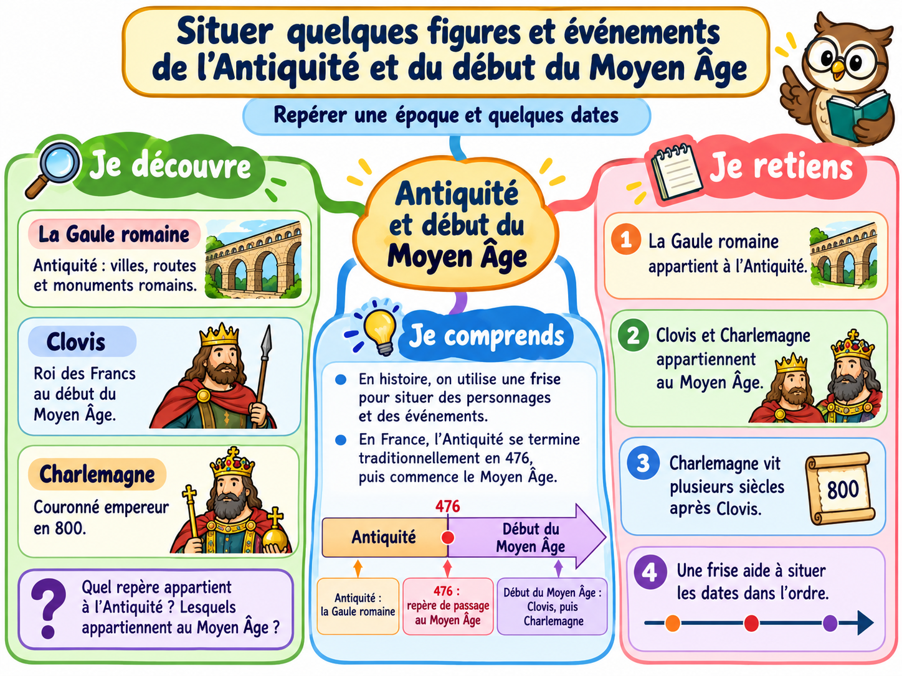

La Gaule romaine
Antiquité : villes, routes et monuments romains.
Exemple : le pont du Gard, un monument construit à l’époque romaine.
Repérer une époque et quelques dates
Observe ces trois repères. Ils ne sont pas tous de la même époque.
Antiquité : villes, routes et monuments romains.

Roi des Francs au début du Moyen Âge.

Couronné empereur en 800, au Moyen Âge.
Quel repère appartient à l’Antiquité ? Lesquels appartiennent au Moyen Âge ?
En histoire, on utilise une frise pour situer des personnages et des événements. En France, l’Antiquité se termine traditionnellement en 476, puis commence le Moyen Âge.
Le Moyen Âge dure longtemps. Charlemagne vit plusieurs siècles après Clovis.
